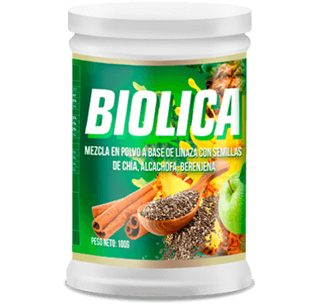

BIOLICAOficial en Colombia
Ayuda a eliminar la grasa de forma natural *

- Suplemento dietético
- Producto natural
- Aceleración del metabolismo*
- Aumento del estado de ánimo*
- Supresión del apetito*
Ayuda a eliminar la grasa de forma natural *
Biolica es un suplemento dietético al 100% natural que puede ayudar a reducir la grasa cuando se combina con una dieta baja en calorías y un estilo de vida saludable *
Biolica se compone de ingredientes naturales extraídos. Esta característica hace que Biolica sea diferente de los muchos otros suplementos que contienen compuestos químicos y que con el tiempo pueden dañar el estómago y el tracto digestivo en general.
Neutraliza las enzimas responsables de la descomposición de los carbohidratos rápidos. En consecuencia, no se convierten en azúcares y, por lo tanto, las calorías no se almacenan en la grasa.*
Favorece la absorción de carbohidratos lentos. Gracias a esto, el proceso de metabolismo de las grasas se acelera, la sensación de saciedad de los alimentos llega, una persona no siente la sensación de hambre durante al menos 8 horas.*
Ayuda a mejorar la inmunidad, así como a mantener una microflora intestinal saludable.*
¡Sentirás la extraordinaria facilidad y el flujo de energía con Biolica!
Reduce el hambre, reduce el apetito. Estimula la digestión, purifica el intestino. *
Acelera el metabolismo, promueve la rápida reducción de la grasa corporal. *
Inhibe la absorción de carbohidratos rápidos. Mejora la piel y la digestión. *
Provoca un flujo de energía, prolonga la juventud a nivel celular. *